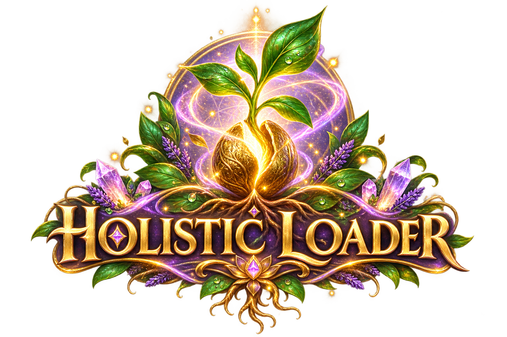

Holistic Game — Relaxing Merge Puzzle Across 10 Islands

Holistic GameChoose an island
Advertisement

Holistic GameYour garden is full. Start a new one and try to create even more harmony.
Island 1 cleared! 🌱
Heads up — your progress won't be saved unless you log in.
Create a free account to save your garden and unlock every island — no payment required.